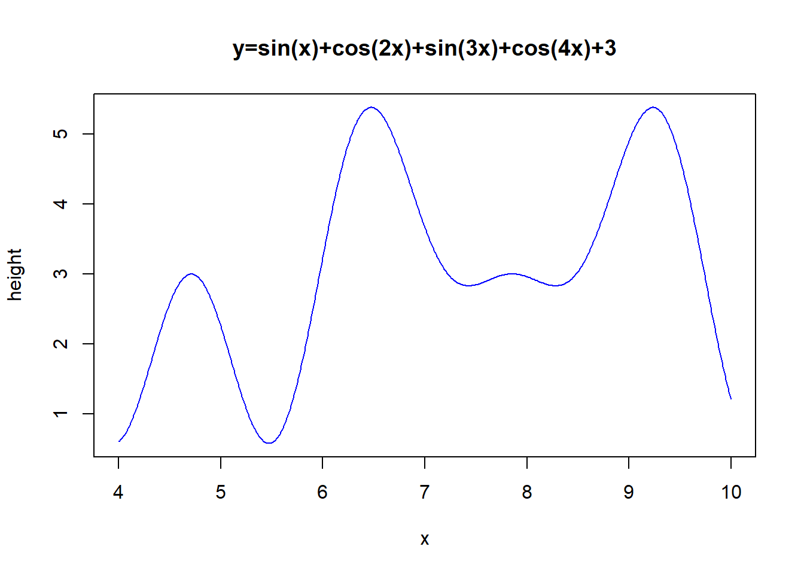
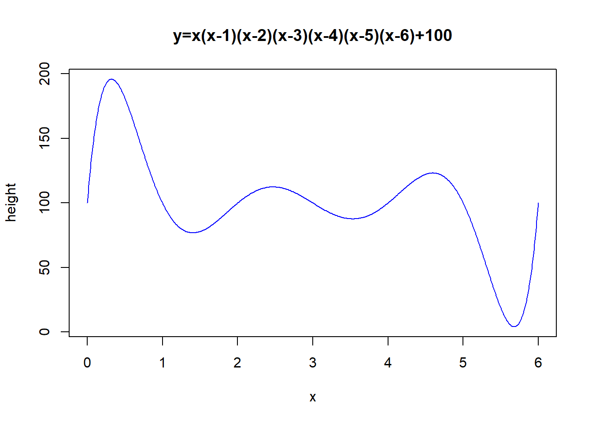
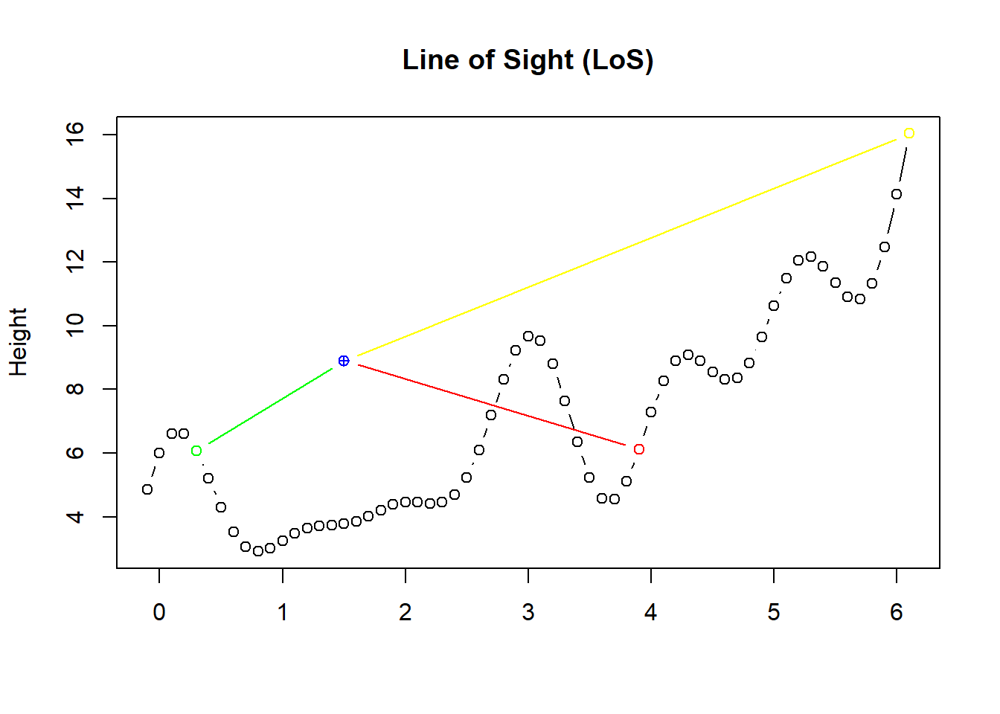
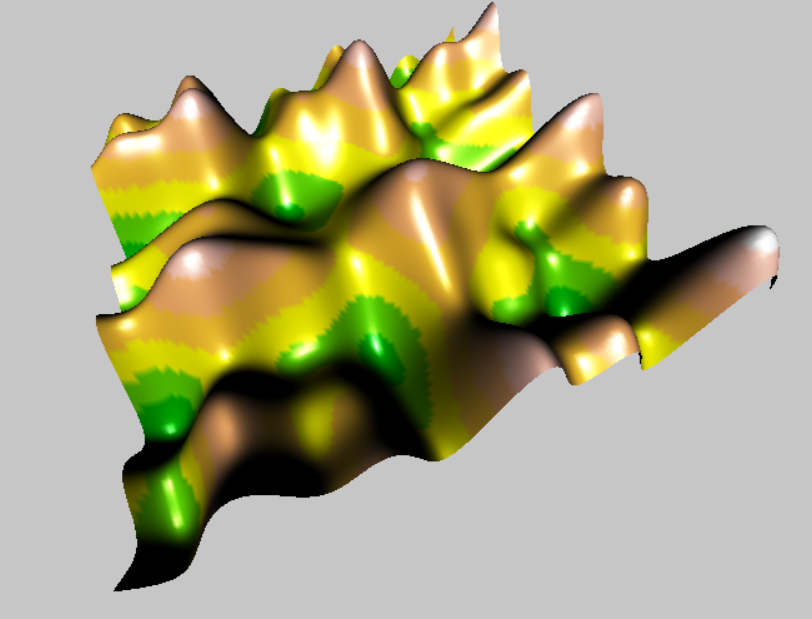
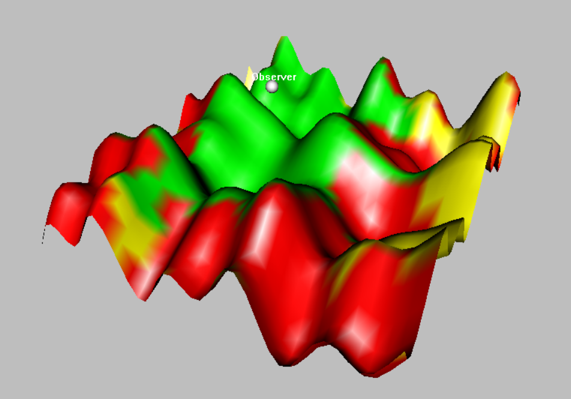

This exercise is taken from https://husnusensoy.wordpress.com/ and has been adapted to this course.
In this exercise you will perform a Line of Sight (LoS) analysis of a 3D terrain. First you will learn how to generate 3D terrains in R, and then how to perform a LoS analysis.
Line of Sight analysis is a commonly used technique in telecommunication industry for A/I (Air Interface) equipment planning and allocation. With the simplest terms LoS is the question whether a point on N-dimensional space is visible by an other observer point. The question can be used to answer where to locate a transceiver on terrain so that it can serve customers on some region A.
Before 3D vizualisation which is more complicated let’s start with simple models. We will start by defining a mathematical function to be used to generate our pseudo terrains (we will simulate terrain). For this purpose trigonometric functions (sin, cos) and polynomial functions are the best ones because of their wavy shapes (did you think your high school mathematics classes were useless? You were wrong). Here is an example of trigonometric terrain
x <- seq(from=4,to=10,by=0.01)
y <- sin(x)+cos(2*x)+sin(3*x)+cos(4*x)+3
plot(x,y,'l',
main="y=sin(x)+cos(2x)+sin(3x)+cos(4x)+3",
ylab="height",col="blue")
You can also choose to have a “polynomial” terrain:
x <- seq(from=0,to=6,by=0.01)
y <- x*(x-1)*(x-2)*(x-3)*(x-4)*(x-5)*(x-6)+100
plot(x,y,'l',
main="y=x(x-1)(x-2)(x-3)(x-4)(x-5)(x-6)+100",
ylab="height",col="blue")
As you see on the figure below, green point is within line of sight of observer (blue point). However there is pseudo hill between red point and observer. The difference is that the line connecting observer and green point is always greater than the terrain function whereas this is not valid for the line connecting observer and red point (for x ε [~2.5, ~3.5] red line is under the terrain curve).

Let’s define a method to find all visible, invisible, and “far” points on any terrain. Since it is not “easy” to decide analytically whether the line connecting observer and target “is above” the terrain for any terrain function, we will use a simple numeric method.
We will define a step size small enough (around Spatial Tolerance) to generate all x values between observer and target. Here is what the code below does:
##################
# Functions
##################
# Terrain Function
height <- function (x) {
x*x/3+sin(x)+cos(2*x)+sin(3*x)+cos(4*x)+sin(5*x)+cos(6*x)+3
}
# Linear Function
linear <- function (x, observer, target) {
v <- observer - target
((x - observer[1])/v[1])*v[2]+observer[2]
}
# Linear Function
distance <- function (p0,p1) {
sqrt(sum((p0-p1)^2))
}
##################
# Input
##################
# Observer location
observer<-c(1.5,9)
# Target on terrain
target <- c(5, height(5))
# Max visible distance
maxVisibleDistance = 4
# Generate points with a step size of 0.1
x <- seq(from=min(observer[1],target[1]),
to=max(observer[1],target[1]),
by=0.1)
# Terrain Height
h <- height(x)
# y Values
y <- linear(x, observer, target)
# LoS Analysis
aboveTerrain <- round((y-h),2) >= 0.00
# First Rule
visible <- !is.element(FALSE,aboveTerrain)
if (visible){
# Second Rule
d <- distance(observer, target)
if(d <= maxVisibleDistance){
status <- "LoS"
}else{
status <- "non-LoS due to Distance"
}
}else{
status <- "non-LoS due to Blocking"
}One of the first differences in 3D LoS analysis is the terrain visualization. We can not use plot function for proper visualization is 3D. Fortunately R has all packages you need for any type of problem. I will use rgl package which can be downloaded using install.packages(“rgl”) command.
Once you have the rgl package, generating pseudo 3D terrains is a trivial thing.
Write the following code in your script:
install.packages('rgl')library(rgl)## Warning: package 'rgl' was built under R version 3.6.3Here we generate the 3D terrain you will be using for the LoS analysis.
# 3D Terrain Function
height <- function (x,y) {
sin(x)+0.125*y*sin(2*x)+sin(y)+0.125*x*sin(2*y)+0.25
}
# Terrain boundaries -8<=x<=8 and -8<=y<=8
boundary <- c(-8,8)
# Terrain grid with a step size of 0.1 units
xy<-seq(from=boundary[1],to=boundary[2],by=0.1)
# Evaluate all heights for all grid points
z<-outer(xy,xy,height)Here you visualize the 3D terrain and determine the apperance by setting the color
# A few visualization staff
zlim <- range(z)
zlen <- zlim[2] - zlim[1] + 1
colorlut <- terrain.colors(zlen) # height color lookup table
col <- colorlut[ z-zlim[1]+1 ] # assign colors to heights for each point
# Draw the terrain
rgl.open()
bg3d("gray")
rgl.surface(xy, xy, z,
color=col)
col <- colorlut[ z-zlim[1]+1 ] # assign colors to heights for each pointAfter drawing the terrain an RGL device window with the result will appear.

A new function in this script is outer function which generates the product of a vector and a row-vector to have a matrix (product of a row-vector with a vector/column-vector is obviously a scalar value and named to be dot/inner product). The third parameter of the function provides us the mechanism to apply a given function (height in our case) for each element of this matrix. Obviously you can play with height function to have fancier 3D terrains and to have best visualization you may need viewpoint routine in rgl package .
Line of Sight analysis on 3D terrain uses the same principles as it does in 2D. Use the following R script to decide on status of a point (invisible, visible, visible but far away)
##################
# Functions
##################
# 3D Terrain Function
height <- function (x,y) {
sin(x)+0.125*y*sin(2*x)+sin(y)+0.125*x*sin(2*y)+0.25
}
# Linear Function
linear <- function (x, observer, target) {
v <- observer - target
y <- ((x - observer[1])/v[1])*v[2]+observer[2]
z <- ((x - observer[1])/v[1])*v[3]+observer[3]
data.frame(x=x,y=y, z=z)
}
# Linear Function
distance <- function (p0,p1) {
sqrt(sum((p0-p1)^2))
}
###########
# Input
##################
# Observer location
observer<-c(10,10,1)
# Target on terrain
target <- c(5, 5, height(5,5))
# Max visible distance
maxVisibleDistance = 4
# Generate points with a step size of 0.1
x <- seq(from=min(observer[1],target[1]),
to=max(observer[1],target[1]),
by=0.1)
# All points on line
line <- linear(x, observer, target)
# Terrain Height
h <- height(line$x,line$y)
# LoS Analysis
aboveTerrain <- round((line$z-h),2) >= 0.1
# First Rule
visible <- !is.element(FALSE,aboveTerrain)
if (visible){
# Second Rule
d <- distance(observer, target)
if(d <= maxVisibleDistance){
status <- "LoS"
}else{
status <- "non-LoS due to Distance"
}
}else{
status <- "non-LoS due to Blocking"
}Until this point we have analyzed LoS of a single point on 2D-3D terrains. But usually network analists wish to know LoS map of the terrain with respect to a given observer. In other words we need to visually understand which regions on 3D terrain are visible by the observer, invisible by the observer due to blocking, or further than the limit from the observer.
Here you will generate a LoS map of our pseudo 3D terrain with respect to an observer with a given set of coordinates and maximum service range(green vs yellow regions).
##################
# Functions
##################
# 3D Terrain Function
height <- function (point) {
sin(point$x)+0.125*point$y*sin(2*point$x)+sin(point$y)+0.125*point$x*sin(2*point$y)+3
}
# Linear Function
linear <- function (px, observer, target) {
v <- observer - target
y <- ((px - observer[1])/v[1])*v[2]+observer[2]
z <- ((px - observer[1])/v[1])*v[3]+observer[3]
data.frame(x=px,y=y, z=z)
}
# Linear Function
distance <- function (terrain, observer) {
sqrt((terrain$x-observer[1])^2+(terrain$y-observer[2])^2+(terrain$height-observer[3])^2)
}
LoS <- function(terrain, observer, maxVisibleDistance){
status = c()
for (i in seq(1:nrow(terrain))) {
if (observer[1] == terrain$x[i] && observer[2] == terrain$y[i]){
if(observer[3] >= terrain$height[i]){
if (terrain$dist2observer[i] > maxVisibleDistance){
status <- c(status,"yellow")
}else{
status <- c(status,"green")
}
}else{
status <- c(status,"red")
}
}else{
# All points on line
line <- linear(seq(from=min(observer[1],terrain$x[i]),
to=max(observer[1],terrain$x[i]),
by=0.1),
observer,
c(terrain$x[i],terrain$y[i],terrain$height[i]))
# Terrain Height
h <- height(line)
# LoS Analysis
aboveTerrain <- round((line$z-h),2) >= 0.00
visible <- !is.element(FALSE,aboveTerrain)
if (visible){
# Second Rule
if(terrain$dist2observer[i] <= maxVisibleDistance){
status <- c(status,"green")
}else{
status <- c(status,"yellow")
}
}else{
status <- c(status,"red")
}
}
}
status
}Create linear function
# Input
##################
# Observer location
observer<-c(0.835597146302462, -1.71025141328573, 6)
# Max visible distance
maxVisibleDistance = 8
# Generate points with a step size of 0.1
x <- seq(from=-8,to=8,by=0.4)
xygrid <- expand.grid(x=x,
y=x)
terrain <- data.frame(xygrid,
height=height(xygrid)
)
terrain <- data.frame(terrain,
dist2observer=distance(terrain, observer)
)
terrain <- data.frame(terrain,
status = LoS(terrain, observer, maxVisibleDistance))
rgl.open()
rgl.surface(x, x,
matrix(data=terrain$height,nrow=length(x),ncol=length(x)),
col=matrix(data=terrain$status,nrow=length(x),ncol=length(x))
)
bg3d("gray")
# Mark the observer
spheres3d(c(observer[1]),
c(observer[3]),
c(observer[2]),
radius=0.5,
color="white"
)
rgl.viewpoint(-60,30)At the end of the analysis you should have something like this in your window:

Hand in: